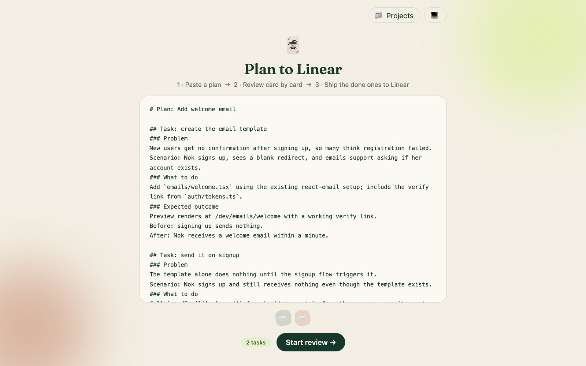
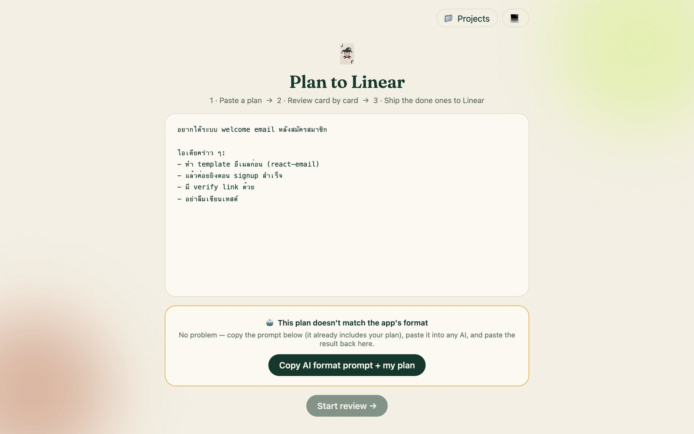
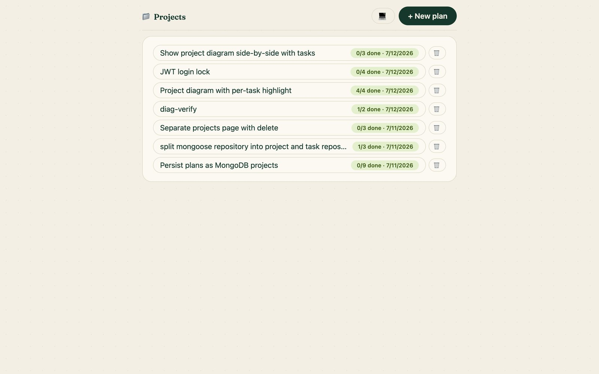
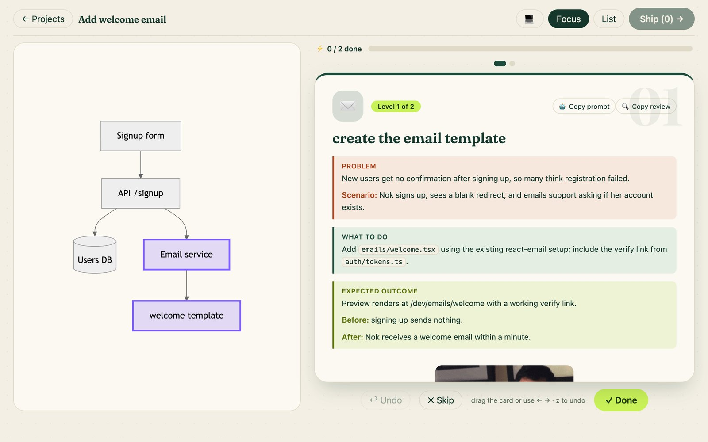
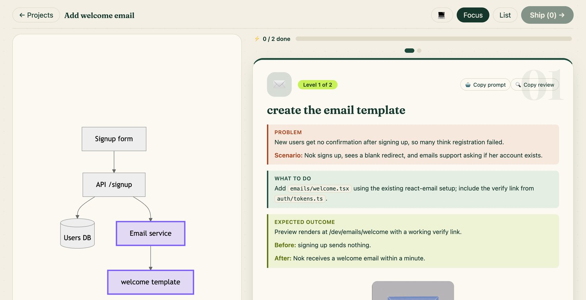
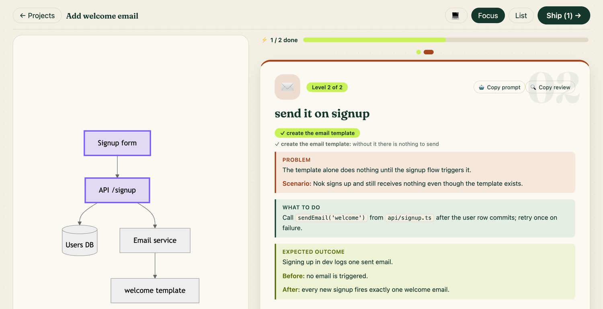
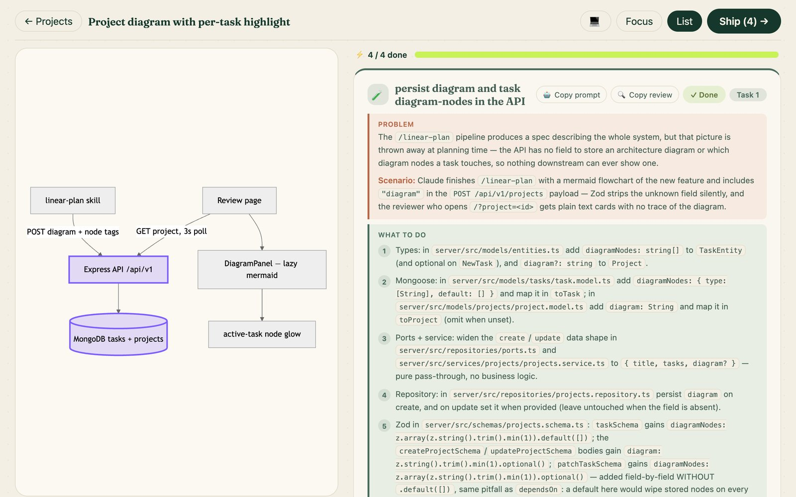

yak dai … Tham Eng
อยากได้ … ทำเอง
จากแผนของ AI สู่การ์ดที่ปัดรีวิวได้ — แล้วส่งเข้า Linear แบบครบวงจร
create the email template
วางแผนกับ AI
มักจบที่ กำแพง markdown
รีวิวยาก · ปิดแท็บแล้วหาย · ไม่เชื่อมกับ tracker
แล้วใครจะกล้าหยิบไป implement?
## Task: define the project domain model…
### Problem
The server has no domain layer — index.ts is a single file mixing HTTP, Linear SDK calls…
### What to do
1. Create server/src/domain/project.ts exporting pure types: TaskEntity…
2. Create server/src/domain/project-repository.ts exporting the ProjectRepository interface…
### Expected outcome
npx tsc --noEmit passes; grepping the domain files…
## Task: add project CRUD use-cases with injected repository
### Problem
Business rules for saving a project have no home…
เปลี่ยนแผนให้เป็น การ์ด
ที่ปัดรีวิวได้ทีละใบ
ความคืบหน้าอยู่ใน MongoDB · ทุกการ์ดเป็น prompt ให้ AI agent · มี diagram บอกตำแหน่งในระบบ
พาชมตัวแอป
6 หน้าจอ จากวางแผน → ส่งเข้า Linear
วางแผนเอง — หรือให้ Claude จัดให้

ไม่อยากวางเอง? สั่ง /yak-dai ครั้งเดียว
Claude ทำ grill → spec → tickets → diagram ให้ แล้วสร้างโปรเจกต์กับ task อัตโนมัติ — เปิดลิงก์เข้ารีวิวได้เลย ไม่ต้องวาง markdown
แผนไม่ตรง format? ให้ AI แปลงให้

สร้างเป็น project ตาม plan ที่ใส่มา

ปัดรีวิวทีละการ์ด — พร้อม Diagram

diagram เดียวกัน — แต่ละ task highlightคนละจุด
ปัดไปการ์ดไหน โหนดของ task นั้นก็ glow ทันที — เห็นเลยว่างานชิ้นนี้แตะส่วนไหนของระบบ


ทุกการ์ดคือ prompt สำหรับ AI agent

ส่งเข้า Linear — ใครก็หยิบไปทำต่อได้
task ที่รีวิวผ่าน กลายเป็น Linear issue ที่มี prompt พร้อมให้ agent ลงมือทันที
การ์ดที่รีวิวผ่าน
Linear issue
แล้วทำ task นี้ให้จบ · verify ตาม Before/After
เพื่อน dev คนไหนก็ได้
สอง workflow — DNA เดียวกัน
pipeline สกิลของ Matt Pocock — และการดัด /yak-dai ให้เข้ากับแอปนี้
Workflow ของ Matt Pocock v1.1
ที่มา: H Spotlight (Facebook) · skills repo ของ Matt Pocock
/grill-with-docsสัมภาษณ์เข้มจนแผนคม — พร้อมเขียน ADR + glossary
/to-specสรุปบทสนทนาเป็น spec แล้ว publish เข้า tracker
/to-ticketsซอยเป็น ticket แนว tracer-bullet พร้อม blocking edges
/implementทำทีละ ticket ด้วย TDD — typecheck และเทสต์ต่อเนื่อง
/code-reviewรีวิวสองแกน: มาตรฐาน repo + ความตรงกับ spec
Pipeline ของ /yak-dai — เหลือแค่ 3 สเต็ป
โครงเดิมของ Matt ยังอยู่ครบ — แต่ยุบเข้าไปอยู่ในคำสั่งเดียว
/yak-daigrill · spec · tickets · diagram จบในคำสั่งเดียว — แล้วสร้างโปรเจกต์กับ task ให้อัตโนมัติ
review ในแอปปัดรีวิวทีละการ์ด พร้อม diagram บอกตำแหน่งในระบบ — อยากแก้บอก Claude หน้าจอ sync เอง
ship + agentส่งการ์ดที่ผ่านเข้า Linear — ใครก็หยิบ prompt 🤖 / 🔍 ไปให้ agent ทำต่อได้
ต่างกันที่ “ช่วงวางแผน”
ช่วงวางแผน — ฝั่งนึงจ้องจอรีวิวทุกสเต็ป อีกฝั่งสั่งครั้งเดียวแล้วรอ · พอถึงตอนลงมือ เหมือนกันทั้งคู่
ทางของ Matt
3 สเต็ป · สร้างไฟล์ · ตอบคำถาม · รีวิวเอง/grill-with-docsCONTEXT.mddocs/adr/0001.md✋ ตอบ + รีวิวเอง/to-specspec (issue #12)✋ รีวิวเอง/to-tickets01-…md02-…md✋ รีวิวเองเปิด editor อ่านทุกไฟล์ · ตอบทุกคำถาม · รีวิวเองทุกสเต็ป
ทางของ yak-dai
สั่งครั้งเดียว แล้วรอ/yak-daigrill · spec · tickets · diagram จบในแชทอยากได้ … ทำเอง
want it … build it yourself
/yak-dai→ เปิดลิงก์รีวิว → ปัดการ์ด →Ship (n) →github.com/pawanInox/planning-workflow